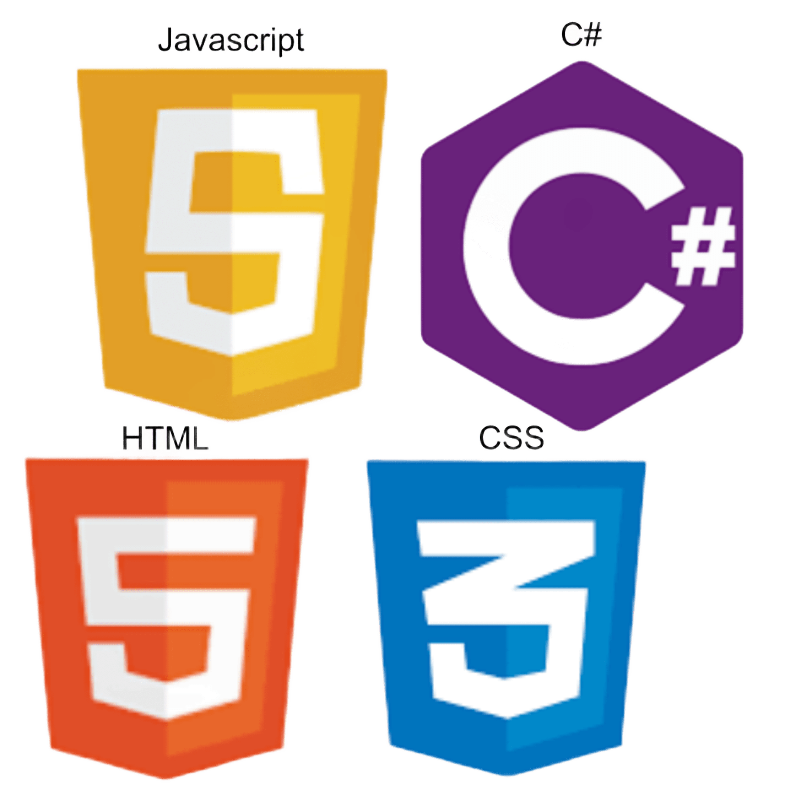

Site de cálculos trabalhistas

Desenvolvida com C# no backend, HTML e CSS no frontend, esse site tem o objetivo de simular cálculos trabalhistas reais, aplicando conceitos de matemática financeira e legislação trabalhista brasileira.
Este sistema ainda não possui uma prévia!